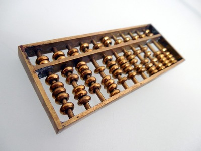
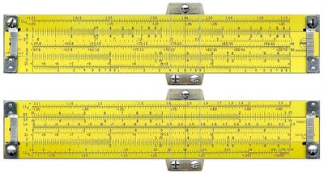
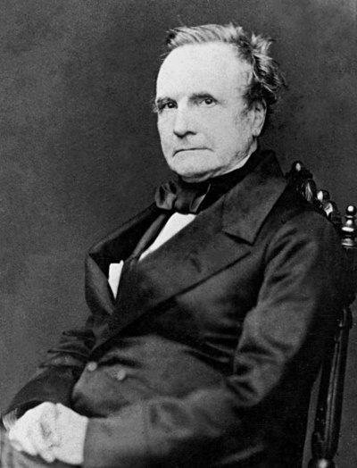
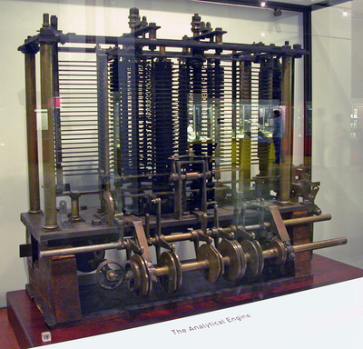
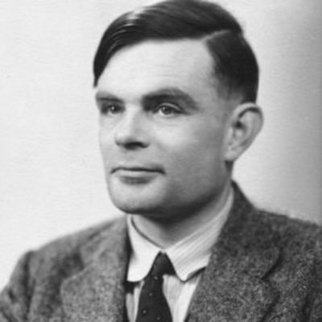
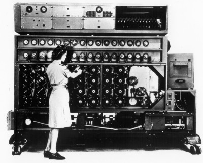
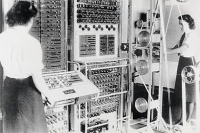
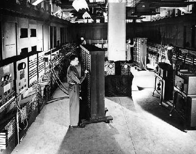

-
A Evolução do Computador
-
3000 a.C. – Ábaco
Por volta do ano 3.000 a.C é que se tem notícia de um dos primeiros instrumentos que ajudam o homem a calcular. Trata-se do ábaco, um instrumento capaz de resolver problemas de adição, subtração, multiplicação e divisão de até 12 números inteiros. O ábaco foi utilizado por diversas civilizações, tais como grega, egípcia, chinesa, japonesa e romana (FILHO, 2007). A figura a seguir apresenta um exemplo de um ábaco.
 Figura 1. Exemplo de ábaco.
Fonte: https://pixabay.com/pt/%C3%A1baco-contar-matem%C3%A1tica-485705/
-
1700 – Ossos de Napier
O ábaco é um instrumento manual de cálculos. Com a evolução tecnológica, a mecânica começou a ganhar força e, em meados do século 17, John Napier, responsável pela descoberta dos logaritmos, evoluiu o procedimento tabular dos árabes, criando um instrumento chamado “Ossos de Napier”.

Figura 2. Exemplo de "Ossos de Napier"
Fonte: https://upload.wikimedia.org/wikipedia/commons/f/fb/An_18th_century_set_of_Napier%27s_Bones.JPG
Esta invenção deu origem às réguas de cálculo, que foram bastante utilizadas até o surgimento das calculadoras eletrônicas. A régua de cálculo é considerada o primeiro computador analógico da história, ou seja, não precisa de energia elétrica para o seu funcionamento.
 Figura 3. Exemplo de régua de cálculo.
Fonte: http://sliderulemuseum.com/SR_Class/FigureB_Pickett_600-ES_med.jpg
O processo de mecanização de dispositivos já foi um grande avanço para a computação, pois aumentou consideravelmente a possibilidade de automação de operações complexas. Por outro lado, um fator limitador para os instrumentos mecânicos é o espaço físico para armazenar a informação, pois quanto maior o volume de dados a serem processados, maior deverá ser o tamanho dos instrumentos. Essas limitações chegaram inclusive a inviabilizar a construção de equipamentos, pois naquela época ainda não havia tecnologia suficiente para tal.
-
1830 – Máquina de Analítica de Babbage
 Figura 4. Charles Babbage.
Fonte: https://pt.wikipedia.org/wiki/Charles_Babbage#/media/File:Charles_Babbage_-_1860.jpg
Charles Babbage é considerado por muitos o verdadeiro pai da computação. Aproximadamente em 1930 ele propôs uma máquina que foi batizada de “Máquina Analítica de Babbage”. Essa máquina é pioneira e extremamente importante para a história da computação, pois foi pensada para ser programável. Isso significa que a máquina proposta era capaz de não somente realizar qualquer cálculo matemático, mas também era capaz de ser configurada para realizar a operação apenas realizando a troca da ordem em que as peças da máquina interagem. Em outras palavras, antes de executar qualquer operação, era possível programar a ordem em que as operações seriam realizadas.
 Figura 5. Modelo de Máquina Analítica de Babage.
Fonte: https://upload.wikimedia.org/wikipedia/commons/a/ac/AnalyticalMachine_Babbage_London.jpg
O projeto da Máquina Analítica de Babbage deveria ser uma máquina movida a vapor. Em sua estrutura, Babbage imaginou que esta máquina possuiria duas unidades: uma unidade de armazenamento de dados e outra de processamento. Por incrível que pareça, essa máquina foi construída apenas um século depois, pois na época não havia tecnologia para suportar tamanha complexidade! Até meados do início do século 20, as ideias de Babbage foram sendo aperfeiçoadas, mas foi na década de 30 que a computação nasceu enquanto ciência.
-
Aproximadamente 1880
Nos Estados Unidos, o primeiro diretor da Biblioteca Nacional de Medicina (National Library of Medicine), John Shaw Billings, teve a ideia de criar algum dispositivo que fosse capaz de armazenar e, posteriormente, manipular os dados em saúde (CAPRON; JOHNSON, 2004). Em 1882, Herman Hollerith sob a orientação de Billings, desenvolveu um sistema de coleta e processamento de informações, que seria utilizado posteriormente para o censo americano. Devido ao sucesso, o sistema foi progressivamente utilizado nas décadas de 1920 e 1930, vindo a se tornar a base dos bancos de dados e dos computadores digitais (CAPRON; JOHNSON, 2004).
-
1936 – Máquina de Turing
Em 1936, o matemático britânico Alan Turing, considerado o criador da ciência da computação, criou uma máquina teórica chamada “Máquina de Turing”, que nada mais é do que um modelo abstrato de um computador. Essa máquina apresenta aspectos lógicos (ou seja, não é uma máquina física), composta por três componentes:
⦁ Fita: é utilizada como dispositivo de entrada, saída e memória. É organizada em células, nas quais cada uma armazena um símbolo.
⦁ Unidade de controle: descreve o estado do controle da máquina, possuindo uma unidade de leitura e gravação. Essa unidade pode se deslocar tanto para a esquerda, como para a direita, e lê e grava um único símbolo em cada movimento.
⦁ Função de transição: comanda a unidade de controle, por meio de métodos de gravação, leitura, sentido do movimento da unidade de controle, bem como o estado da máquina.
 Figura 6. Alan Turing.
Fonte: https://www.biography.com/.image/c_fill,cs_srgb,dpr_1.0,g_face,h_300,q_80,w_300/MTE5NDg0MDU1MTUzMTE2Njg3/alan-turing-9512017-1-402.jpg
Por incrível que pareça, com essa máquina de Turing, é possível modelar qualquer computador digital. Isto é, o princípio básico dos computadores modernos é o mesmo utilizado na máquina de Turing. O modelo foi tão avançado para a época que apenas quase 10 anos depois é que o primeiro computador eletrônico foi construído com base nessa máquina proposta. Outro aspecto importantíssimo foi a criação do conceito de “Algoritmo”. A máquina de Turing é capaz de executar qualquer algoritmo, isto é: um conjunto de regras e operações clara e rigorosamente definidas e ordenadas. Os algoritmos sempre visam à solução de um problema ou de uma classe de problemas, que sempre são resolvidos por um conjunto finito de etapas.
 Figura 7. Máquina de Turing.
Fonte: https://media.defense.gov/2007/Sep/18/2000450326/-1/-1/0/070918-F-1234S-006.JPG
-
1940 -1959 – 1ª GERAÇÃO
1943 – Colossus Figura 8. Colossus..
Fonte: https://upload.wikimedia.org/wikipedia/commons/thumb/4/4b/Colossus.jpg/375px-Colossus.jpg
Você já viu o filme, “Jogo da Imitação” (2014). Pois é, ele foi indicado ao Oscar de Melhor filme, Melhor ator, Melhor diretor, entre outros. Ganhou o de melhor Roteiro adaptado e outros prêmios internacionais. O filme conta a história do COLOSSUS, o primeiro computador eletrônico criado. Sua criação contou com a participação de Alan Turing. O cenário era da segunda guerra mundial. Os alemães se comunicavam utilizando mensagens criptografadas, isto é, mensagens codificadas. Somente quem conhecia os códigos poderiam entender a mensagem original. Os ingleses, do qual eram inimigos, financiaram a construção do COLOSSUS, com o intuito de decifrar as mensagens criadas pelos alemães. O COLOSSUS era um projeto secreto do governo inglês, ficando desta forma até a década de 70. Isso dificultou bastante a difusão da tecnologia desenvolvida por esse computador, e pouco foi aproveitado.
-
1946 – ENIAC
 Figura 9. Visão geral do ENIAC.
Fonte: http://history-computer.com/ModernComputer/Electronic/ENIAC.html
O ENIAC foi construído pelos norte-americanos durante a Segunda Guerra Mundial, que também tinham como objetivo a decodificação de mensagens criptografadas. Pesava 30 toneladas e ocupava 180m 2 , o que é o equivalente a um grande galpão.
-
1946 - 1952 – EDVAC
O EDVAC (Electronic Discrete Variable Automatic) foi completado em 1952, e foi o primeiro computador BINÁRIO. Isso é, operava utilizando apenas 0 ou 1 como instrução. Ele ocupava uma área de aproximadamente 45m 2 e pesava quase 8 toneladas. Ele funcionou até 1961.
-
1959 - 1964 – 2ª GERAÇÃO
Substituição de válvulas por transistoresA partir de 1940 começaram a surgir os computadores comerciais de grande escala, mainframes. De 1940 a 1950, esses computadores eram de primeria geração. Após 1960 esses computadores já apresentavam uma segunda geração e a IBM,começa a construir computadores de grande porte e com tecnologias inovadoras para época. Foi quando começaram a surgir computadores de tamanhos médios, computadores com transistores e até mesmo com monitor de vídeo (1958).
SURGE A INFORMÁTICA MÉDICA
Nova ciência criada da fusão de computação e medicina (SHORTLIFFE; CIMINO, 2008).
-
1964-1970 – 3ª GERAÇÃO
Introdução dos circuitos integrados. Surgiu a Intel, empresa que hoje é líder em desenvolvimento de processadores para computador. Foi quando surgiu o termo “software”.
1970 – BrasilA informática em saúde surge nos principais centros universitários do país. No entanto, segundo Sabbatini, foi em 1998 que ocorreu o grande marco do desenvolvimento desse campo na pesquisa nacional, com a realização do Seminário Nacional de Informática em Saúde, com a iniciativa do Ministério da Saúde (SABBATINI, 1998). Deste encontro, nasceu a Sociedade Brasileira de Informática em Saúde – SBIS. Esta sociedade tornou-se o foco principal da atividade profissional na área, por meio da organização de congressos e seminários (BRASIL, 2008).
A partir deste ponto você já deve conhecer a história. As modificações dos computadores de 4ª e 5ª gerações são muito específicas, a nível de melhora nos processamentos dos circuitos, nas suas capacidades de transporte de informação e de processamento. Mas também foi quando começou a difusão dos microcomputadores. Na década de 80 surgiram os PCs, em 90 os dispositivos menores, como PDAs, relógios e celulares, tudo computadorizado. E, hoje em dia, tudo ou quase tudo possui um microcomputador ou microprocessador embutido.
E dentro de sua unidade de saúde? Além do PC que você utiliza para realizar essa aula, onde mais há sistemas computadorizados? Você pode descrever?